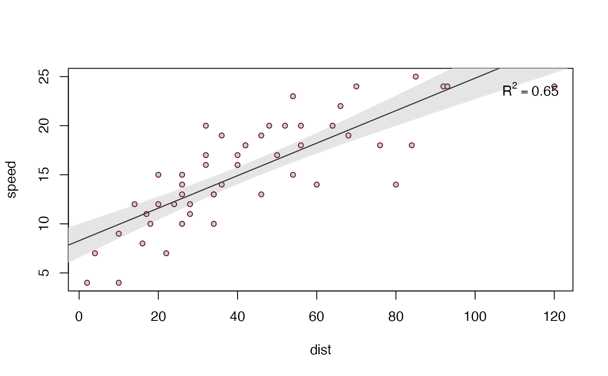
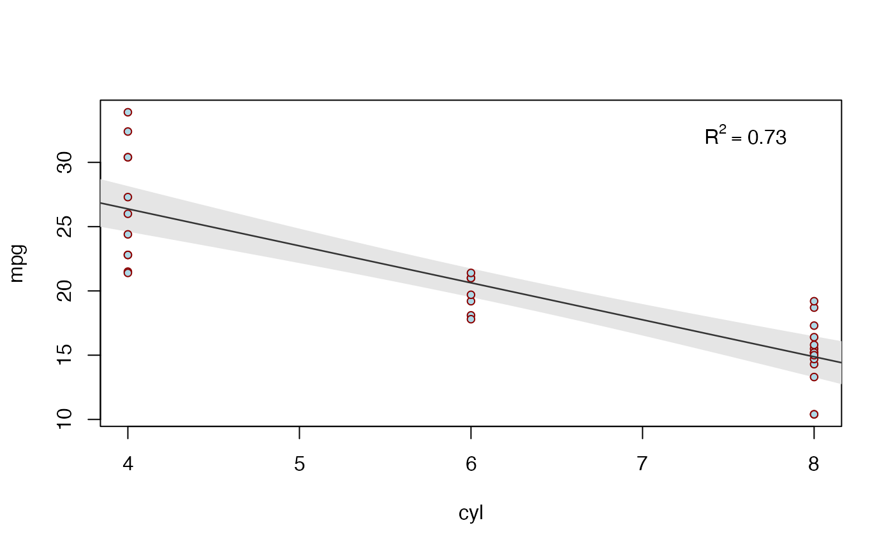

This function will fit a linear model to two variables. The criterion can be continuous or binary. For logistic regression, set family = 'binomial'. For poisson regression, set family = 'poisson'. If omitted, family will default to 'gaussian' for standard linear regression.
biVarPlot(data, x, y, family = "Gaussian")
Arguments
| data | A data frame. |
|---|---|
| x | An independent variable |
| y | A dependent variable |
| family | A distribution ('gaussian', 'binomial', or 'poisson') |
Examples
# Linear regression biVarPlot(data = cars, x = dist, y = speed)#> #> Call: #> lm(formula = dv ~ iv) #> #> Residuals: #> Min 1Q Median 3Q Max #> -7.5293 -2.1550 0.3615 2.4377 6.4179 #> #> Coefficients: #> Estimate Std. Error t value Pr(>|t|) #> (Intercept) 8.28391 0.87438 9.474 1.44e-12 *** #> iv 0.16557 0.01749 9.464 1.49e-12 *** #> --- #> Signif. codes: 0 ‘***’ 0.001 ‘**’ 0.01 ‘*’ 0.05 ‘.’ 0.1 ‘ ’ 1 #> #> Residual standard error: 3.156 on 48 degrees of freedom #> Multiple R-squared: 0.6511, Adjusted R-squared: 0.6438 #> F-statistic: 89.57 on 1 and 48 DF, p-value: 1.49e-12 #>biVarPlot(data = mtcars, x = cyl, y = mpg)#> #> Call: #> lm(formula = dv ~ iv) #> #> Residuals: #> Min 1Q Median 3Q Max #> -4.9814 -2.1185 0.2217 1.0717 7.5186 #> #> Coefficients: #> Estimate Std. Error t value Pr(>|t|) #> (Intercept) 37.8846 2.0738 18.27 < 2e-16 *** #> iv -2.8758 0.3224 -8.92 6.11e-10 *** #> --- #> Signif. codes: 0 ‘***’ 0.001 ‘**’ 0.01 ‘*’ 0.05 ‘.’ 0.1 ‘ ’ 1 #> #> Residual standard error: 3.206 on 30 degrees of freedom #> Multiple R-squared: 0.7262, Adjusted R-squared: 0.7171 #> F-statistic: 79.56 on 1 and 30 DF, p-value: 6.113e-10 #>biVarPlot(data = Orange, x = age, y = circumference)#> #> Call: #> lm(formula = dv ~ iv) #> #> Residuals: #> Min 1Q Median 3Q Max #> -46.310 -14.946 -0.076 19.697 45.111 #> #> Coefficients: #> Estimate Std. Error t value Pr(>|t|) #> (Intercept) 17.399650 8.622660 2.018 0.0518 . #> iv 0.106770 0.008277 12.900 1.93e-14 *** #> --- #> Signif. codes: 0 ‘***’ 0.001 ‘**’ 0.01 ‘*’ 0.05 ‘.’ 0.1 ‘ ’ 1 #> #> Residual standard error: 23.74 on 33 degrees of freedom #> Multiple R-squared: 0.8345, Adjusted R-squared: 0.8295 #> F-statistic: 166.4 on 1 and 33 DF, p-value: 1.931e-14 #>biVarPlot(data = ChickWeight, x = Time, y = weight)#> #> Call: #> lm(formula = dv ~ iv) #> #> Residuals: #> Min 1Q Median 3Q Max #> -138.331 -14.536 0.926 13.533 160.669 #> #> Coefficients: #> Estimate Std. Error t value Pr(>|t|) #> (Intercept) 27.4674 3.0365 9.046 <2e-16 *** #> iv 8.8030 0.2397 36.725 <2e-16 *** #> --- #> Signif. codes: 0 ‘***’ 0.001 ‘**’ 0.01 ‘*’ 0.05 ‘.’ 0.1 ‘ ’ 1 #> #> Residual standard error: 38.91 on 576 degrees of freedom #> Multiple R-squared: 0.7007, Adjusted R-squared: 0.7002 #> F-statistic: 1349 on 1 and 576 DF, p-value: < 2.2e-16 #>biVarPlot(data = USArrests, x = UrbanPop, y = Rape)#> #> Call: #> lm(formula = dv ~ iv) #> #> Residuals: #> Min 1Q Median 3Q Max #> -18.644 -5.476 -1.216 5.885 27.937 #> #> Coefficients: #> Estimate Std. Error t value Pr(>|t|) #> (Intercept) 3.78707 5.71128 0.663 0.510 #> iv 0.26617 0.08513 3.127 0.003 ** #> --- #> Signif. codes: 0 ‘***’ 0.001 ‘**’ 0.01 ‘*’ 0.05 ‘.’ 0.1 ‘ ’ 1 #> #> Residual standard error: 8.626 on 48 degrees of freedom #> Multiple R-squared: 0.1692, Adjusted R-squared: 0.1519 #> F-statistic: 9.776 on 1 and 48 DF, p-value: 0.003001 #># Logistic regression vot <- rnorm(20, 15, 5) vot <- sort(vot) phon <- c(0,1,0,0,0,0,0,1,0,1,0,1,0,1,1,1,1,1,1,1) df1 <- data.frame(vot, phon) biVarPlot(data = df1, x = vot, y = phon, family = 'binomial')#> #> Call: #> glm(formula = dv ~ iv, family = family) #> #> Deviance Residuals: #> Min 1Q Median 3Q Max #> -1.6465 -0.6992 0.2450 0.6424 2.0105 #> #> Coefficients: #> Estimate Std. Error z value Pr(>|z|) #> (Intercept) -4.1462 1.8927 -2.191 0.0285 * #> iv 0.3391 0.1471 2.306 0.0211 * #> --- #> Signif. codes: 0 ‘***’ 0.001 ‘**’ 0.01 ‘*’ 0.05 ‘.’ 0.1 ‘ ’ 1 #> #> (Dispersion parameter for binomial family taken to be 1) #> #> Null deviance: 27.526 on 19 degrees of freedom #> Residual deviance: 18.343 on 18 degrees of freedom #> AIC: 22.343 #> #> Number of Fisher Scoring iterations: 5 #># Poisson regression time <- 1:10 counts <- c(18, 17, 21, 20, 25, 27, 30, 43, 52, 50) df2 <- data.frame(time, counts) biVarPlot(data = df2, x = time, y = counts, family = 'poisson')#> #> Call: #> glm(formula = dv ~ iv, family = "poisson") #> #> Deviance Residuals: #> Min 1Q Median 3Q Max #> -0.7860 -0.5056 -0.1335 0.4594 0.9255 #> #> Coefficients: #> Estimate Std. Error z value Pr(>|z|) #> (Intercept) 2.56576 0.15017 17.086 < 2e-16 *** #> iv 0.13937 0.02098 6.643 3.06e-11 *** #> --- #> Signif. codes: 0 ‘***’ 0.001 ‘**’ 0.01 ‘*’ 0.05 ‘.’ 0.1 ‘ ’ 1 #> #> (Dispersion parameter for poisson family taken to be 1) #> #> Null deviance: 49.5120 on 9 degrees of freedom #> Residual deviance: 3.2222 on 8 degrees of freedom #> AIC: 58.969 #> #> Number of Fisher Scoring iterations: 4 #>